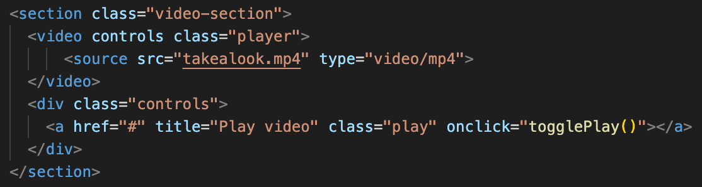
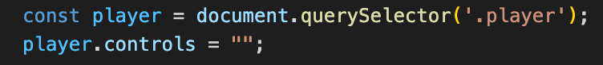
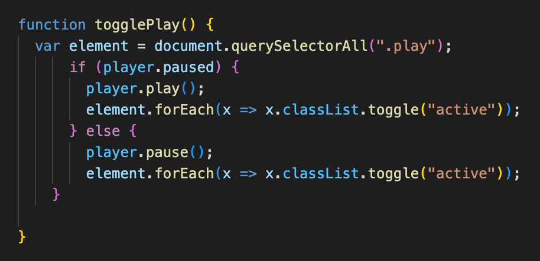

This is an accesible play-pause button. It is an alternative to HTML's native video controls.
Why did you build that?
Multimedia elements such as images, audio tracks, and videos aren't as easily understood by screenreaders or navigated by the keyboard as text, and we need to give them a helping hand. All elements on a site need to be given proper textual alternatives so they can be understood by assistive technologies and their users.
Doesn't HTML already have a <video> tag that includes controls?
HTML5 video and audio instances even come with a set of inbuilt controls that allow you to control the media straight out of the box.
However, there are problems with these controls:
- They are not keyboard-accessible in most browsers, i.e. you can't tab between the controls inside the native player. Chrome is actually pretty good, but Safari does not let you tab through controls.
- Different browsers give the native controls differing styling and functionality, and they aren't stylable, meaning that they can't be easily made to follow a site style guide.
How do you build an accesible one?
Step 1: Create new, basic video control elements in your HTML.
I added a <section> element that includes a <video> element with my mp4 file, as well as a new <div> element that includes my new video controls.
Step 2: Use JavaScript to add functionality to the controls you created.
In a script.js file, create a variable for your video player so that we can manipulate it. I also disabled the native controls of the video so that I can add my own funcitonality.
Step 3: Write a JS function to control the play/pause button
Use conditional logic to toggle between play and pause buttons.
This function controls the player itself and also toggles a CSS class that styles the button with a play or pause icon.
Step 4:If appropriate, add other video controls such as rewind, fast-forward and stop.
Check the HTMLMediaElement properties for other ways to access and code functionality into your video player.
For example, you can use player.currentTime to code rewind or fast-forward.
Step 5: Check your control for color-contrast and keyboard accessibility.
Ensure that beyond including text alternatives, your controls are visible and easy to control with the keyboard.
Step 6: Consider other accessibility tools, such as video transcripts and closed captioning.
You can provide an audio transcript of video content, or add closed captioning for dialogue, along with audio descriptions of what is happening in the video.